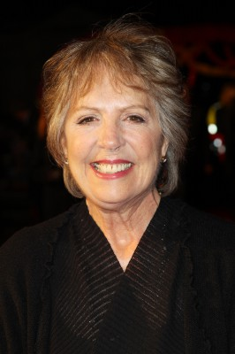
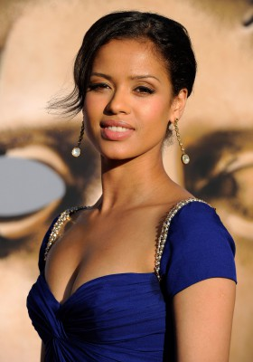
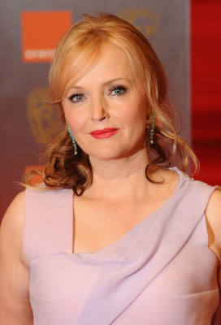
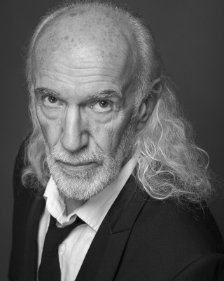
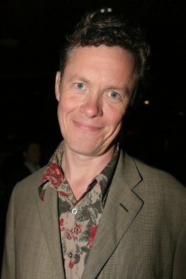
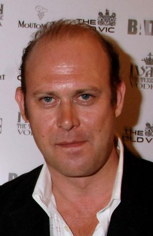

#2076 Dido Elizabeth Belle
Alternativ: Belle

 IMDB-Wertung: 7.4 / 10
IMDB-Wertung: 7.4 / 10  Metascore: 64
Metascore: 64 
Als Captain Sir John Lindsay ein kleines farbiges Mädchen ohne Eltern bei sich aufnimmt und adoptiert, ändert er damit das Schicksal seiner Familie und das der Bewohner Englands. John Lindsay bittet seinen Onkel Lord Mansfield, auf das Kind aufzupassen, während er selbst auf See ist. So wächst es schließlich im Haushalt der adligen Mansfields auf und wächst zu einer Schönheit mit dem Namen Dido Elizabeth Belle heran. Doch aufgrund ihrer Hautfarbe ist sie doch nicht gleichgestellt - zu niedrig für die hohe Gesellschaft bei Tisch, zu vornehm, um bei den farbigen Dienstboten zu speisen. Bekommt die Familie Besuch, erlebt Dido außerdem nicht selten die Missachtung engstirniger Menschen wie James Ashford. Doch die junge Frau will die erniedrigenden Zustände für Menschen mit anderer Hautfarbe nicht länger hinnehmen...
Jahr: 2013
Dauer: 104 Minuten
FSK: 6
Land: England Studio: 20th Century Fox of GermanyTonspuren: DTS - ,
Untertitel: Deutsch,
Auflösung: 1080p (1920x808) Größe: 3911 MB
Genre: Drama, Liebe
Regisseur: Amma Asante
Drehbuch: Misan Sagay
Soundtrack: Rachel Portman
Darsteller:
- Matthew Goode als Captain Sir John Lindsay
 Alan McKenna als Harry
Alan McKenna als Harry-  Penelope Wilton als Lady Mary Murray
 Emily Watson als Lady Mansfield
Emily Watson als Lady Mansfield Tom Wilkinson als Lord Mansfield
Tom Wilkinson als Lord Mansfield Sarah Gadon als Elizabeth Murray
Sarah Gadon als Elizabeth Murray-  Gugu Mbatha-Raw als Dido Elizabeth Belle
-  Miranda Richardson als Lady Ashford
 James Norton als Oliver Ashford
James Norton als Oliver Ashford- Tom Felton als James Ashford
 Sam Reid als John Davinier
Sam Reid als John Davinier-  David Gant als Zoffany
-  Alex Jennings als Lord Ashford
- James Northcote als Mr. Vaughan
-  Andrew Woodall als Lord Mayor
- Christopher Middleton als Court Clerk
- Tom Coulston als John Davinier's Friend , uncredited
- James Hepburn als Young Man 1 , uncredited
- Lamin Tamba als Alaudah Eqiano , uncredited
- Lauren Julien-Box als Young Dido
- Natasha Williams als Poor Woman
- Cara Jenkins als Young Elizabeth
- Timothy Walker als Wimbridge
- Charlotte Roach als Maid, Kenwood House
- Rupert Wickham als Reverend Davinier
- Bethan Mary-James als Mabel
- Alana Ramsey als Maid, Ashford House
- Daniel Wilde als Gentleman 1
- Susan Brown als Baroness Vernon
- Edmund Short als Law Student
- Tony Eccles als Mr. Francis , uncredited
- Barrie Martin als Gentleman , uncredited
- Alfred Mather als Mr. Francis , uncredited
- Steve Munroe als Male Insurer , uncredited
- Adam Nowell als Upper Class Gentleman , uncredited
- Jenna Sharpe als Middle Class Lady , uncredited
- Darren Shaw als Dock Worker , uncredited
- Fabio Vollono als Rat Catcher , uncredited
Datei: X:\2013(A-F)\Dido Elizabeth Belle (2013, FSK6, 1920x808).mkv seit 30.09.2015
Festplatte: HD 2012(N-Z)-2013(A-H)
 Es gibt insgesamt 127 Filme in der Gruppe '2013(A-F)'
Es gibt insgesamt 127 Filme in der Gruppe '2013(A-F)'